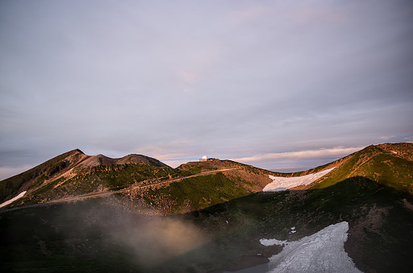
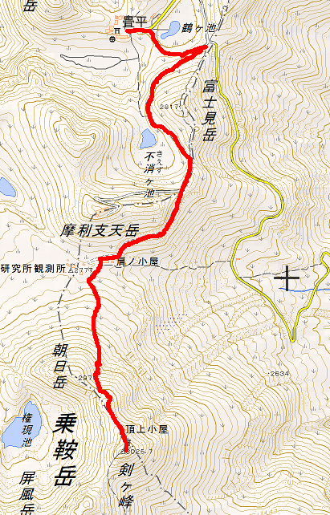
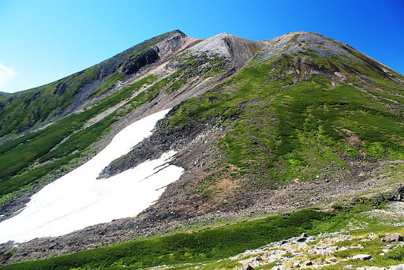

以前の記事を読めばわかるように私には体幹機能障害があります。障害は 5 級と認定されています。実際には体幹機能障害以外の障害も合併しているのですがここでは省きます。
それで突然なのですが最近になって体幹機能障害があるにもかかわらず登山を再開したいと思うようになりました。そのきっかけとなったのは以下の要因があります。
もう中高年と言われる年齢なのですが、死ぬまでにもう 1 度だけでも稜線上に立ちたい、そうでないと死にきれないと思い始め、きっと人並み以上の努力はいるだろうし、登れる山も限られるだろうけど、決してできなくはないんじゃないかと思い始め、そのための努力を始めることにしました。努力と行っても楽しむ気まんまんなんですがw
最初の目標を、誰でも登れる 3000m 峰とひどい言われようの乗鞍岳にしました。やはり畳平から乗鞍岳山頂までの標高差が少なく、北アルプスの中では最も登りやすい山の一つであろうという判断からです。登頂目標は 2020 年夏としました。

Photo:あやがね [CC BY-NC 2.0], via Flickr
電子国土の地理院地図で調べてみたのですが、バスターミナルがある畳平の標高が約 2704.8m。肩の小屋の標高が約 2759.4m。標高差が約 54.6m しかなく、しかも車が通れるような道のため、体幹機能障害があっても問題なく歩けそうです。
肩の小屋を過ぎてからですが、地図を見る限り歩行距離約 200m はあまり斜度もきつくはなさそうですがそれ以降から稜線に向けては斜度が急激に急峻になっていくのがわかります。おそらくここから稜線までが乗鞍岳登山の正念場になるのでしょう。肩の小屋から乗鞍岳剣ヶ峰まで標高差約 266.3m。全標高差約 320.9m。頑張らねばなりません。

この地図は、国土地理院長の承認を得て、同院発行の電子地形図(タイル)を複製したものです。
(承認番号 平30情複、 第525号)
なおこの地図を複製する場合には、国土地理院の長の承認を得なければなりません。
国土地理院
この斜度の昇り降りををクリアするためにも筋トレが欠かせないなと考えています。また障害で走ることができずランニングができないので、家の近所の山や六甲山などで障害があっても登れそうなルートを頻繁に登って心肺機能強化に務めたいと思っています。

Photo: Alpsdake(Own work) [CC BY-SA 3.0], via Wikimedia Commons
しばらくは乗鞍岳をターゲットとするトレーニングに関する記述が続くかもしれませんがご容赦ください。
{kind=link}